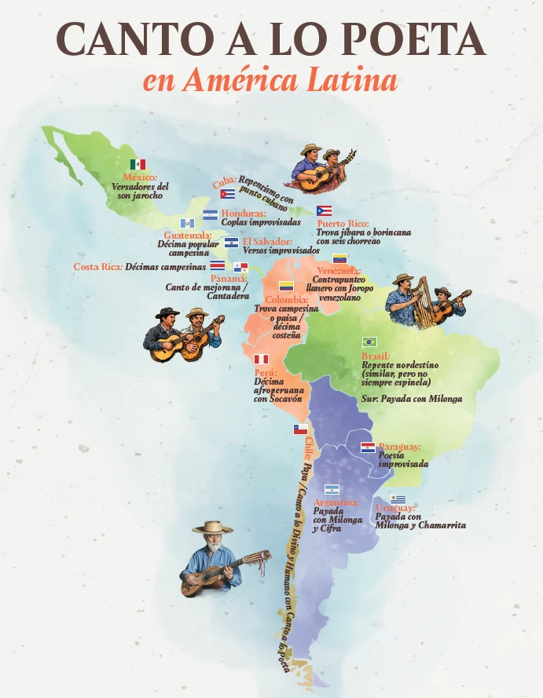

Aprende a escribir una décima
Diez versos, ocho sílabas y una rima que suena como guitarra. La décima se canta en Chile desde hace siglos y en muchos países más. Aquí vas a aprender a escribirla, paso a paso y jugando.
Tu camino de cantor
¿Qué es la décima?
Descubre su forma: 10 versos, 8 sílabas y un mapa de rimas.
La décima viajera
De España a Chile y a toda América: payadores, guitarrones y poetas.
Taller de sílabas
Aprende a contar como los poetas: sinalefa y última palabra.
Cazador de rimas
Entrena tu oído y encuentra las palabras que riman.
Escribe tu décima
El taller te ayuda verso a verso, contando sílabas y revisando rimas.
Antología
Décimas de la tradición y las que tú vayas escribiendo.
¿Qué es la décima?
Es un poema de diez versos. Cada verso tiene ocho sílabas (se llaman octosílabos) y las rimas siguen siempre el mismo dibujo. Por eso, cuando escuchas una, la reconoces de inmediato.
El mapa de las rimas
Pasa el mouse por un verso: se iluminan los que riman con él.
¿Cómo se arma?
Piensa la décima como una casa de dos pisos:
Primer piso (versos 1 al 4): presenta la idea. Los versos 1 y 4 riman entre sí (A), y los versos 2 y 3 también (B).
El puente (verso 5): rima con el primero (A) y une las dos partes. Muchos poetas ponen aquí una pausa, con punto o dos puntos.
Segundo piso (versos 6 al 10): desarrolla la idea y la cierra. El verso 10 es el más importante: ¡el remate!
Desafío: ¿lo tienes claro?
La décima viajera
La décima nació en España, cruzó el océano en los barcos y se quedó a vivir en casi toda América. Cada pueblo la cantó con su propia música. Hoy es uno de los lazos más bonitos entre los países que hablan español.

Línea de tiempo
El canto a lo poeta
En Chile la décima se transformó en el canto a lo poeta, una de nuestras tradiciones más antiguas. Se canta con la guitarra traspuesta o con el guitarrón chileno, de 25 cuerdas.
A lo divino ✦
Versos sobre la Biblia, los santos y la fe, cantados en vigilias y fiestas religiosas.
A lo humano ☀
Versos sobre el amor, la historia, la naturaleza, la sabiduría, el mundo al revés y travesuras.
La paya ⚔
Dos payadores improvisan décimas en un contrapunto: uno pregunta y el otro responde.
Pie forzado 🎯
Le dan al poeta un verso y debe terminar su décima con él. ¡Lo podrás practicar en la estación 5!
En el canto a lo poeta, un "verso" es un poema completo: una cuarteta que se glosa en cuatro décimas, más una despedida.
Aciértale a 6 de 8 países para ganar la estrella de la décima viajera. Después, a contar sílabas.
Taller de sílabas
Los poetas no cuentan las sílabas igual que en la clase de lenguaje. Cuentan como suena el verso al decirlo en voz alta. Tienen tres reglas:
Contar
Separa cada palabra en sílabas y súmalas.
Sinalefa
Si una palabra termina en vocal y la siguiente empieza con vocal (o con h), se unen en una sola sílaba.
La última palabra
Mira dónde está el acento de la última palabra:
aguda (cantar) suma 1 · llana (casa) queda igual · esdrújula (pájaro) resta 1.
Desafío: ¿cuántas sílabas tiene?
🔬 Laboratorio de versos
Escribe cualquier verso y mira cómo lo cuenta un poeta.
Cazador de rimas
Dos palabras riman cuando suenan igual desde la vocal acentuada hasta el final. En la décima usamos la rima consonante: deben coincidir las vocales y las consonantes.
canción · corazón
Las dos terminan en -ón. ¡Esta es la que usamos en la décima!
luna · pluma
Solo coinciden las vocales (u-a). Es rima, pero no la de la décima.
luna · lunes
Empiezan igual, pero lo que importa es cómo terminan.
Desafío: caza la rima
📚 Banco de rimas
Escribe una palabra y busca otras que rimen con ella. Lo vas a usar mucho al escribir.
Escribe tu décima
🔍 Lupa del verso
Haz clic en un verso para ver cómo se cuentan sus sílabas.
Tus rimas
Antología
Décimas para leer, aprender y guardar. Al final aparecen las que tú vayas escribiendo (se quedan guardadas en este computador).